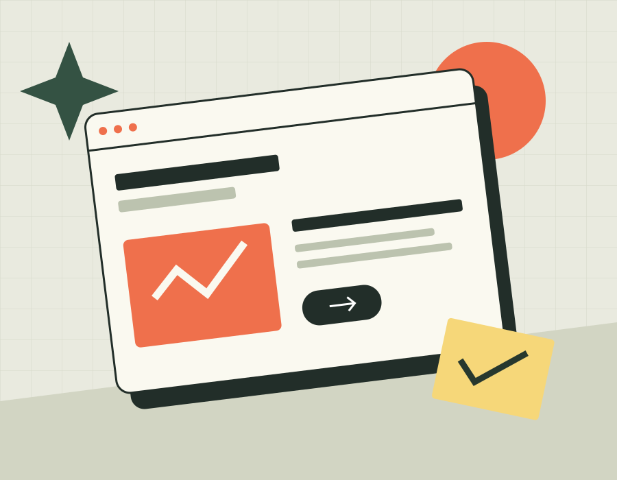

A calm, grid-based concept for a plant shop.
STUDENT. EXPLORER. MAKER.
Turning curiosity
into something
you can click.
Hi, I’m Aisyn Bekali. A software engineering student exploring the space where thoughtful design meets the web.
01 / THE BEGINNINGAlways a work in progress.

DESIGN → CODE → DISCOVER✳︎
HTML & CSS✳︎BOOTSTRAP✳︎JAVASCRIPT✳︎jQUERY✳︎RESPONSIVE DESIGN
A FEW CREATIVE EXERCISES
Small ideas.
Considered details.
A playful interface concept for everyday ideas.
A visual concept inspired by Kazakhstan’s landscapes.
LEARNING IN PUBLIC
Behind every pixel,
there’s a new lesson.
Notes on building this portfolio, solving small problems, and making the web a little more usable.